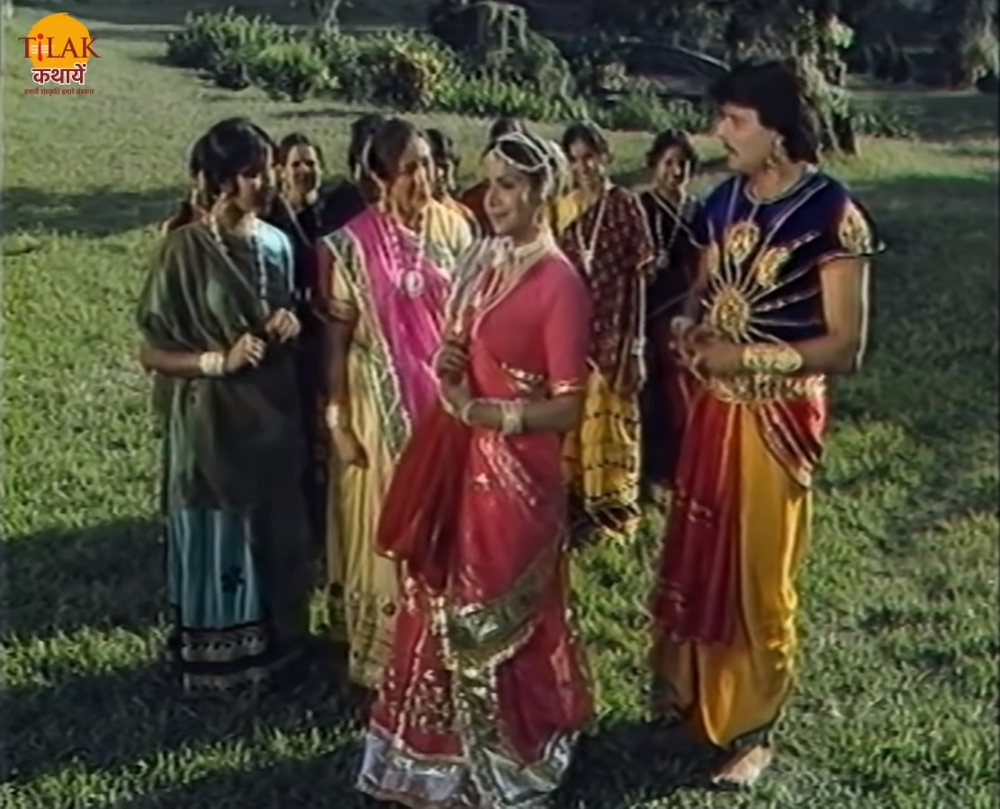
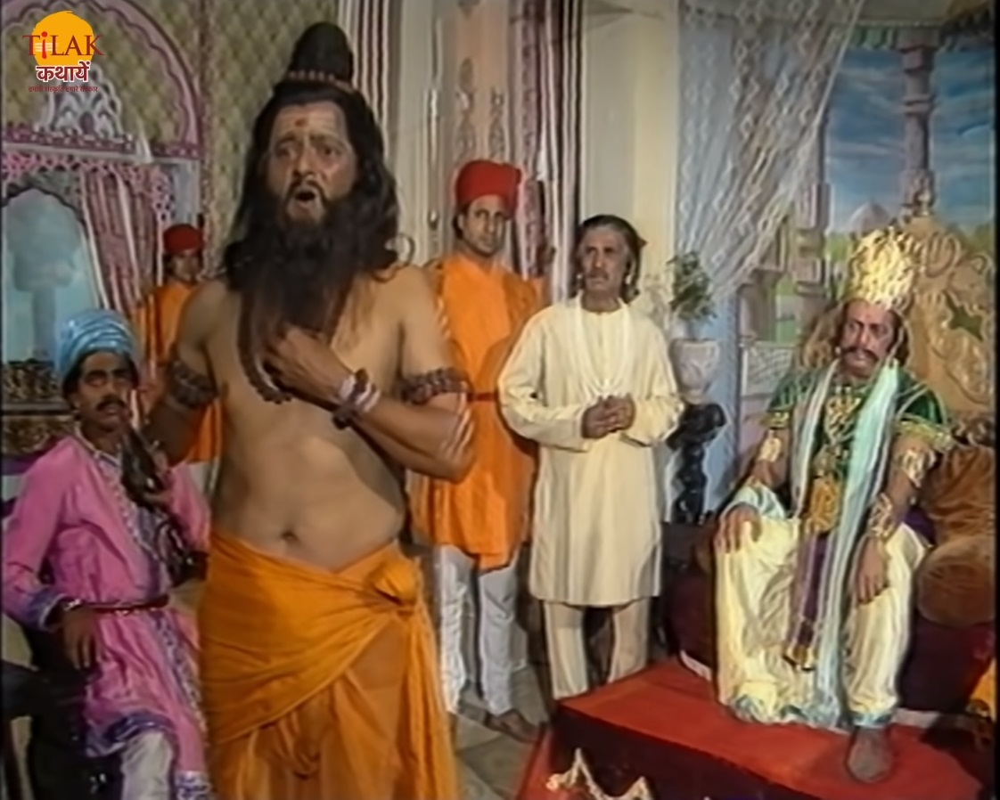

| बेताल को विक्रम फिर से पकड़ लेता है और अपने कंधे पर डाल कर ले चलता है। बेताल फिर से विक्रम को एक कहानी सुनता है। काशी नगरी के एक राजा के बेटे वज्रमुकुट और राजा के दीवान का बेटा बहुत आँचें मित्र थे। दीवान का बेटा वज्रमुकुट को अपने साथ एक जगह लेकर जाता है जिसे वज्रमुकुट देख कर प्रसन्न हो जाता है। वज्रमुकुट को वहाँ पर एक लड़की मितली है जो अपनी सहेलियों के साथ खेल रही थी। वज्रमुकुट को वह लड़की पसंद आ जाती है तो वह उस से उसका नाम और पता पूछता है। तो वह लड़की वज्रमुकुट को इशारों में अपना नाम और पता बता देती है जिसे वज्रमुकुट समझ नहीं पाता। वज्रमुकुट अपने मित्र से इस बात के बारे में चर्चा करता है तो वो उसे लड़की कि पहेली सुझाने में मदद करता है और लड़की का नाम और पता बताने में मदद करता है। |  |
| वज्रमुकुट और उसका मित्र दोनों लड़की के नगर में भेष बदल कर जाते हैं। कर्णपुर पहचने के बाद वो एक औरत के घर आश्रय लेते हैं। वह औरत पद्मवती को जानती थी तो वह पद्मवती की पास जाती है उर उसे बताती है की राजकुमार तुम्हें खोजते हुए आ पहुँचा है और वो तुमसे मिलना चाहता है। पद्मवती फिर से उसे एक पहले बता कर भेज देती है। बूढ़ी औरत पहेली को लेकर वज्रमुकुट के पास आती है और उसे पहले बताती है जिसे दीवान का बेटा फिर से सूझा लेता है। वज्रमुकुट पहेली के अनुसार चतुर्थी की चाँदनी रात में पद्मवती से मिलने के लिए आ जाता है। दोनों एक दूसरे से मिलकर खुश होते हैं। पद्मवती के पिता वज्रमुकुट की पद्मवती से शादी को मान जाते हैं। एक दिन जब वज्रमुकुट का मित्र वज्रमुकुट का इंतज़ार कर रहा था की तभी कुछ सैनिक एक लड़की को राज्य से बाहर निकल रहे थे तो उसने बूढ़ी औरत से इसका कारण पुछा तो उसने बताया की नगरी का राजा ने क़ानून बनाया है यदि किसी स्त्री के चरित्र पर शंका होती है उसे राज्य से बाहर निकल दिया जाता है। वज्रमुकुट को लाने के लिए दीवान का बेटा जाता है और जब वो पद्मवती के पिता से विदा लेने आते हैं तो उसका पिता उन्हें बताता है की वो पद्मवती का विवाह उनसे नहीं कर सकता क्योंकि कर्णपुर का राजा मेरी बेटी से विवाह करना चाहत है और जिसके कारण वो उन्हें मना नहीं कर पाए क्योंकि राजा को मना करना उनके बस में नहीं था। वज्रमुकुट का मित्र इस विपत्ति का हाल निकलने का एक रास्ता सोचता है। |  |
एक दिन पद्मवती के घर वरजमुकुट का मित्र चोर बं कर उसके सारे आभूषण चुरा कर ले जाता है और साधु बनकर उन आभूषणों को बेचने के लिए नगर में आता है जिसे सैनिक पकड़ कर राजा के पास आ जाते हैं राजा साधु से पूछते हैं की उसे ये आभूषण कसी मिले तो दीवान का बेटा एक झूठी कहानी बना कर राजा को बताता है की एक दिन वो तप कर रहे थे की एक स्त्री उन्हें रिझाने के लिए आती है और जब साधु क्रोध में आता है तो वो उस स्त्री को चिमटे से मरते हैं तो उसके आभूषण वहीं गिर जाते हैं जिन्हें लेकर वो बिछने आए थे। साधु उस स्त्री के बारे मीन बताते हैं की ये आभूषण जिस स्त्री के हैं उसके हाथ पर कमल का फूल है। रजा समझ जाता हैं और पद्मवती को चरित्र हीन समझ कर नगर से निकालने की सजा सुनाता है। दीवान का बेटा वज्रमुकुट और पद्मवती को मिला देता है। बेताल विक्रम से पूछता है की अब ये बता की किसका पाप बड़ा है और कौन अपराधी है। विक्रम बेताल को बताता है की राजा अपराधी है क्योंकि उसने बिना सोचे समझे न्याय किया उसने ये भी नहीं देखा की पद्मवती अपराधी है भी या नहीं और दीवान के बेटे ने तो अपबने मित्र को उसके प्रेम से मिलने के लिए ये सब किया। विक्रम का उत्तर सुन बेताल फिर से उड़कर अपने पेड़ पर चला जाता है।
| Previous Story | Home | Next Story |